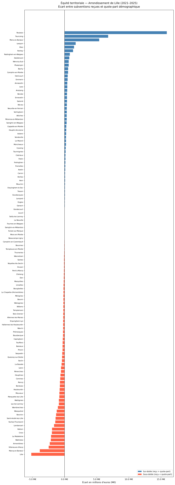

Équité territoriale — Subventions d’État aux communes
Arrondissement de Lille, 2021–2025
Auteur·rice
Anton
Date de publication
24 avril 2026
Introduction
Ce rapport analyse la répartition des subventions d’État (DSIL, DETR, Fonds Vert, Recyclage Foncier…) entre les communes de l’arrondissement de Lille sur la période 2021–2025.
L’objectif est de mesurer l’équité territoriale : chaque commune a-t-elle reçu une part de l’enveloppe proportionnelle à son poids démographique ? Les écarts positifs signalent des communes sur-dotées ; les écarts négatifs, des communes sous-dotées.
Territoire : 728 lignes
Financement : 3340 lignes
Opérations : 3333 lignes
Population : 648 communes
2. Préparation
2a. Communes de l’arrondissement de Lille (595)
Code
communes = territoire[territoire['type_territoire'] =='COM'].copy()communes['insee_ardt'] = communes['insee_ardt'].astype(str).str[:-2]communes = communes[communes['insee_ardt'] =='595']communes['COM'] = communes['insee_siege'].dropna().astype(int).astype(str)print(f"{len(communes)} communes dans l'arrondissement de Lille")
124 communes dans l'arrondissement de Lille
2b. Financements actifs avec classification du dispositif
fin_communes = fin_op.merge( communes[['sirene', 'libelle_territoire', 'COM']], on='sirene', how='inner')print(f"{len(fin_communes)} lignes de financement vers des communes de l'arrondissement")print(f"Montant total : {fin_communes['montant_sub'].sum():,.0f} €")
778 lignes de financement vers des communes de l'arrondissement
Montant total : 151,203,894 €
La méthode est simple : pour chaque commune, on calcule sa quote-part démographique (population / population totale de l’arrondissement), puis on en déduit le montant qu’elle aurait dû recevoir si la répartition avait été strictement proportionnelle.
Enveloppe totale analysée : 151.2 M€ | Population couverte : 1,259,622 hab.
Commune
Population
Reçu
Quote-part théorique
Écart
Écart (%)
0
Roubaix
99,507
27.85 M€
11.94 M€
15.90 M€
133.1
2
Tourcoing
99,160
18.69 M€
11.90 M€
6.79 M€
57.0
3
Mons-en-Barœul
21,368
7.95 M€
2.56 M€
5.39 M€
210.1
6
Lesquin
9,356
2.85 M€
1.12 M€
1.73 M€
153.8
10
Illies
1,688
1.68 M€
0.20 M€
1.48 M€
729.8
13
Hantay
1,249
1.47 M€
0.15 M€
1.32 M€
883.7
23
Radinghem-en-Weppes
1,404
0.99 M€
0.17 M€
0.82 M€
485.3
24
Deûlémont
1,801
0.96 M€
0.22 M€
0.74 M€
341.9
14
Wervicq-Sud
5,446
1.29 M€
0.65 M€
0.64 M€
98.1
16
Phalempin
4,863
1.22 M€
0.58 M€
0.64 M€
109.8
36
Bachy
1,890
0.79 M€
0.23 M€
0.56 M€
246.5
28
Camphin-en-Pévèle
2,506
0.84 M€
0.30 M€
0.54 M€
180.6
17
Ostricourt
6,014
1.21 M€
0.72 M€
0.49 M€
67.7
30
Emmerin
3,026
0.84 M€
0.36 M€
0.47 M€
130.5
9
Annœullin
10,887
1.73 M€
1.31 M€
0.43 M€
32.6
5. Visualisation
Code
analyse_triee = analyse_complete.sort_values('ecart')n =len(analyse_triee)fig, ax = plt.subplots(figsize=(12, max(10, n *0.28)))couleurs = ['steelblue'if x >=0else'tomato'for x in analyse_triee['ecart']]bars = ax.barh(analyse_triee['commune'], analyse_triee['ecart'] /1e6, color=couleurs)ax.axvline(0, color='black', linewidth=0.9)ax.set_title("Équité territoriale — Arrondissement de Lille (2021–2025)\n""Écart entre subventions reçues et quote-part démographique", fontsize=13, pad=12)ax.set_xlabel('Écart en millions d\'euros (M€)', fontsize=11)ax.tick_params(axis='y', labelsize=8)ax.xaxis.set_major_formatter(mticker.FuncFormatter(lambda x, _: f"{x:.1f} M€"))# Légendefrom matplotlib.patches import Patchlegende = [ Patch(facecolor='steelblue', label='Sur-dotée (reçu > quote-part)'), Patch(facecolor='tomato', label='Sous-dotée (reçu < quote-part)')]ax.legend(handles=legende, loc='lower right', fontsize=9)plt.tight_layout()plt.savefig('../outputs/equite_territoriale.png', dpi=150, bbox_inches='tight')plt.show()

6. Conclusion
Ce premier regard sur la répartition des subventions révèle des écarts significatifs entre communes. Ces disparités peuvent s’expliquer par plusieurs facteurs :
Capacité à déposer des dossiers : les grandes communes disposent de services techniques plus étoffés.
Nature des projets éligibles : certains dispositifs (DSIL) financent des projets d’envergure concentrés dans les pôles urbains.
Contexte politique et calendrier : les programmations annuelles influencent les attributions.
Une analyse complémentaire par dispositif (fund_type) et par année permettrait d’affiner ce diagnostic.
Données : Système d’information des aides d’État — Préfecture du Nord. Population : INSEE RP 2022 (PMUN). Analyse réalisée avec Python / pandas.